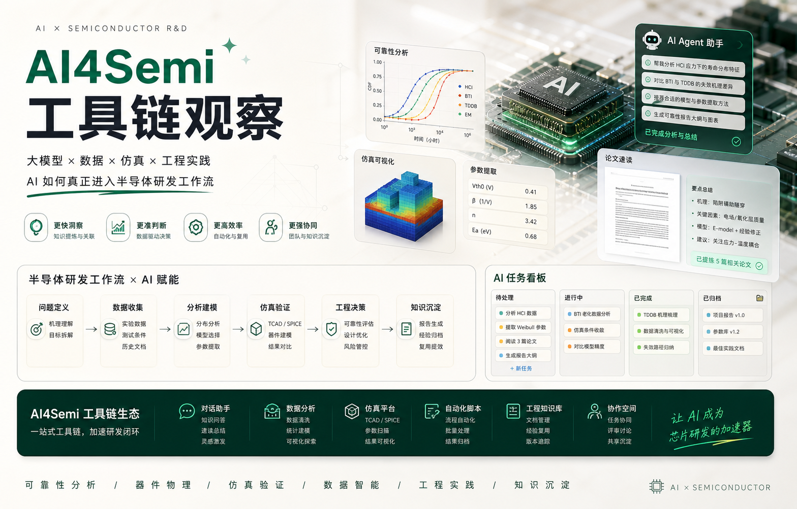

Kstar / 小红书主题
AI4Semi 工具链观察
分享大模型、Agent、数据分析和仿真自动化如何进入半导体研发流程。

主题文案
AI 真正有用的时候，往往不是一句“能不能替代”，而是它怎样进入具体研发环节，在哪些位置放大判断、加快整理、辅助分析，最后沉淀成可重复使用的工程能力。这组内容主要记录我对 AI4Semi 工具链和实际使用方式的观察。
Kstar / 小红书主题
分享大模型、Agent、数据分析和仿真自动化如何进入半导体研发流程。

AI 真正有用的时候，往往不是一句“能不能替代”，而是它怎样进入具体研发环节，在哪些位置放大判断、加快整理、辅助分析，最后沉淀成可重复使用的工程能力。这组内容主要记录我对 AI4Semi 工具链和实际使用方式的观察。